何年ぶりでも、
好きなら、また。
学生時代の部活やサークルでの経験があれば、ブランクの年数は問いません。今の自分で、またプレーする楽しさを。
FUKUOKA BASKETBALL COMMUNITY
また、バスケがある日々へ。
久しぶりのシュートも、初めましての仲間も。
バスケが好き。その気持ちから、また始めよう。
20代社会人・経験者対象 ／ 参加条件を確認
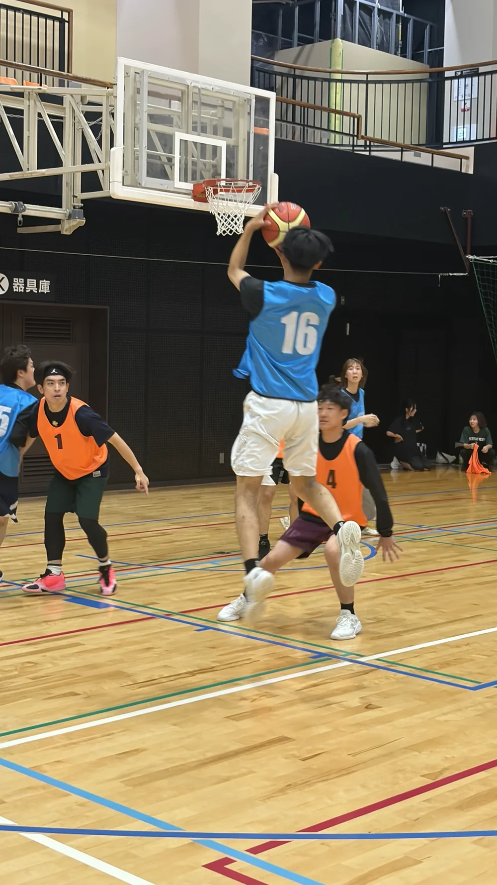
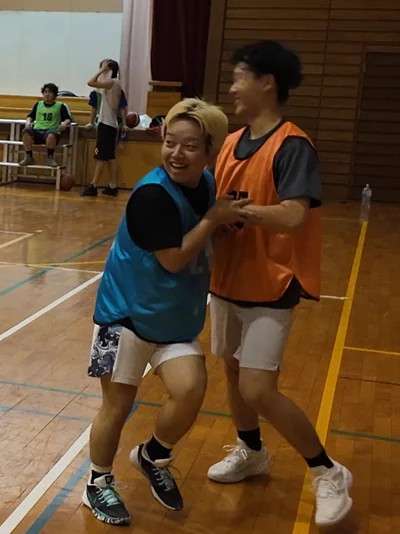
プレーも、そのあとの笑顔も。20代社会人バスケ経験者・男女歓迎
福岡市内朝も、仕事終わりの夜も。
500円 / 1回都度払い・事前決済なし
p.b.qについて
また、夢中になるきっかけを。仕事をして、家に帰る。
その日常に、もうひとつ楽しみを。
最後にシュートを打ったのは、いつだろう。
バスケは好き。でも、やる場所がない。
そんな20代の社会人へ。
p.b.qは、福岡市内で活動する、20代社会人・バスケ経験者のコミュニティです。朝から体を動かす日も、仕事終わりに集まる日も。もう一度シュートを打つ時間を、一緒につくっています。
上手くいく日も、いかない日も。
「また来たい」と思える時間を。
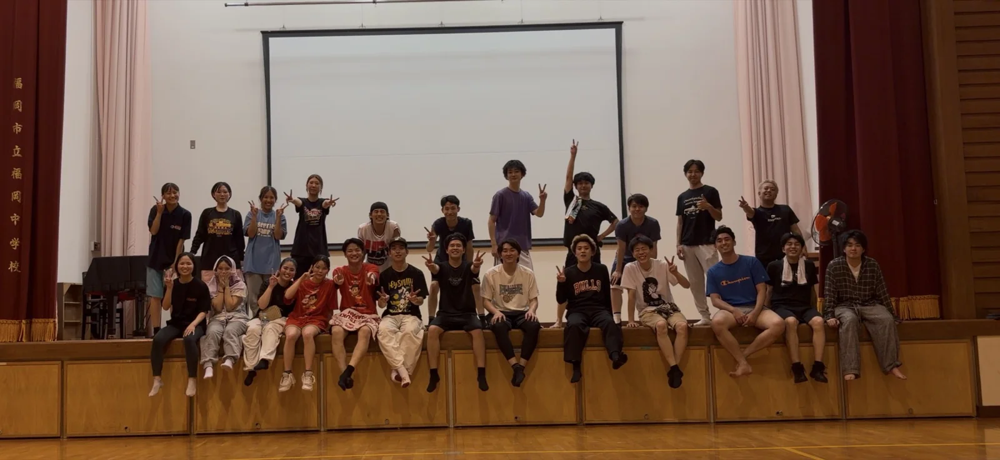
学生時代の部活やサークルでの経験があれば、ブランクの年数は問いません。今の自分で、またプレーする楽しさを。
一人参加も、友達同士の参加も大歓迎です。初めての方や女性も参加しやすい雰囲気づくりを大切にしています。
日程を見て、参加できる日に体験を申し込めます。参加費の事前決済はありません。
活動の雰囲気
写真で見る、いつものp.b.q。いつもの練習も、バスケ以外の時間も。
写真をタップすると、大きく見られます。
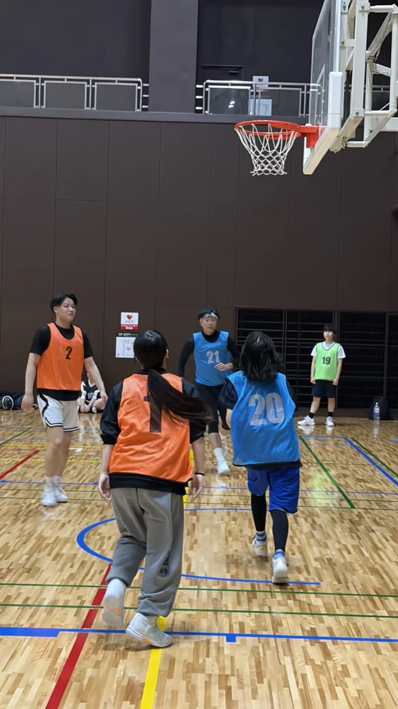
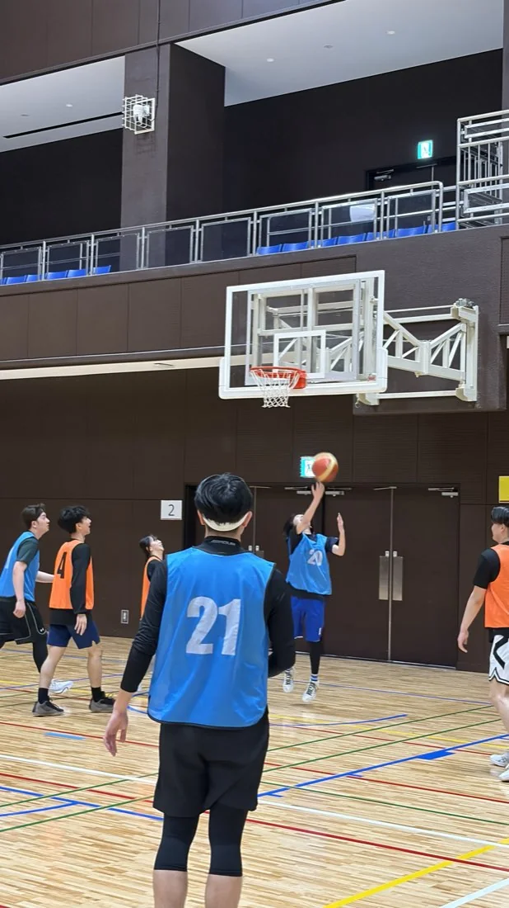
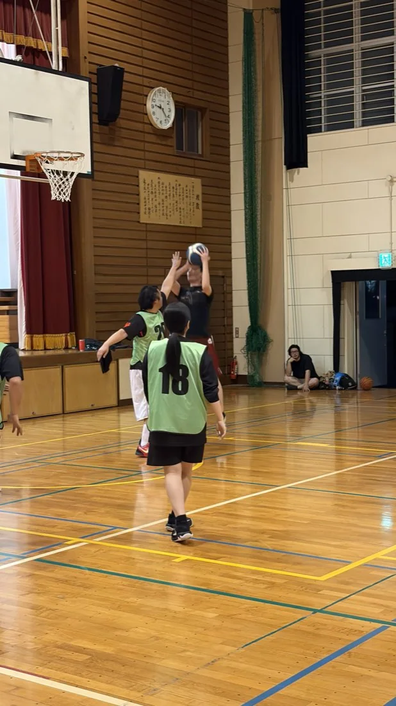
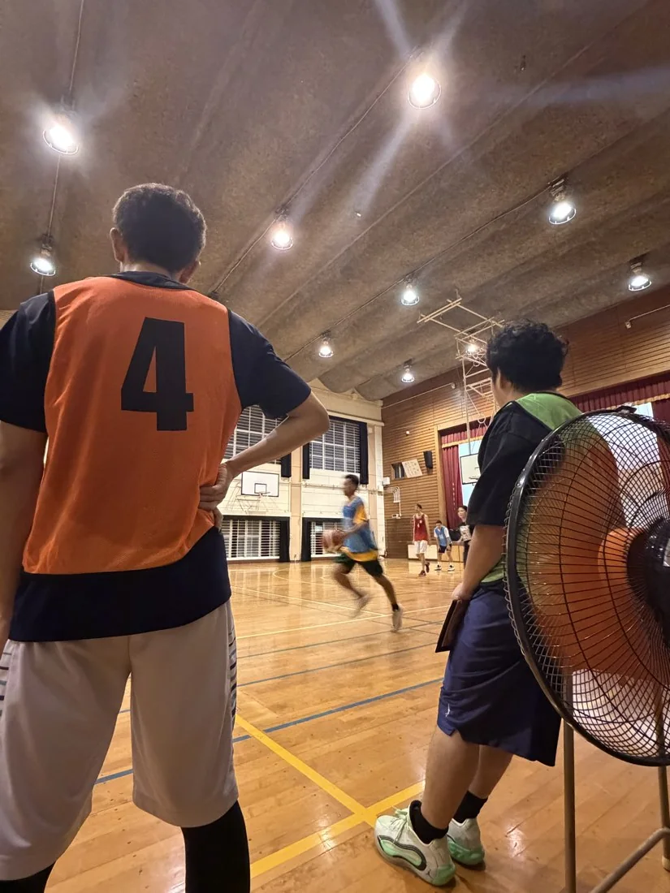
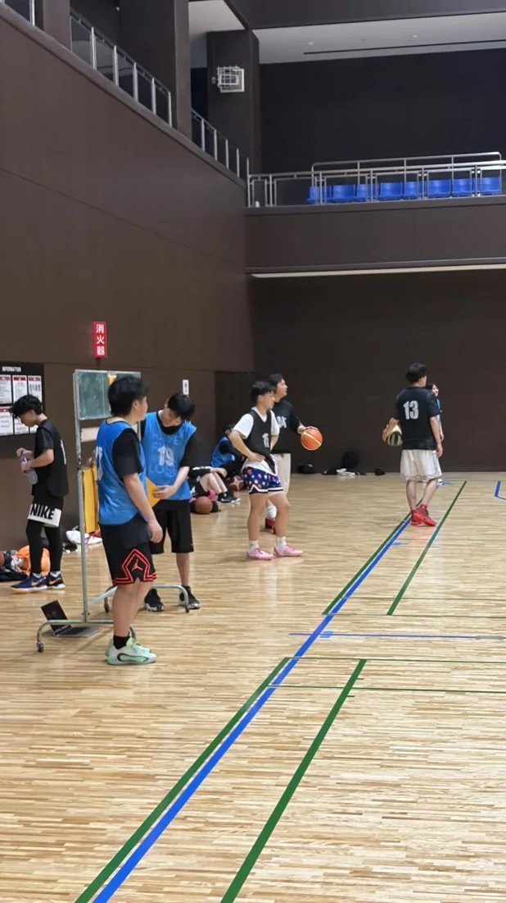
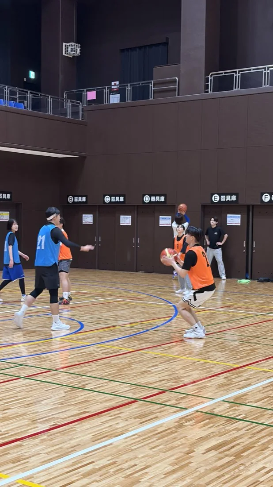
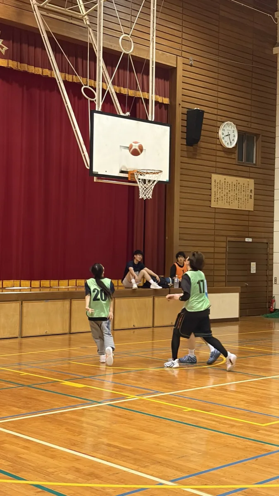
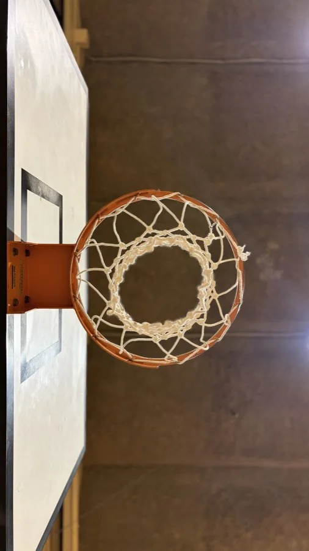
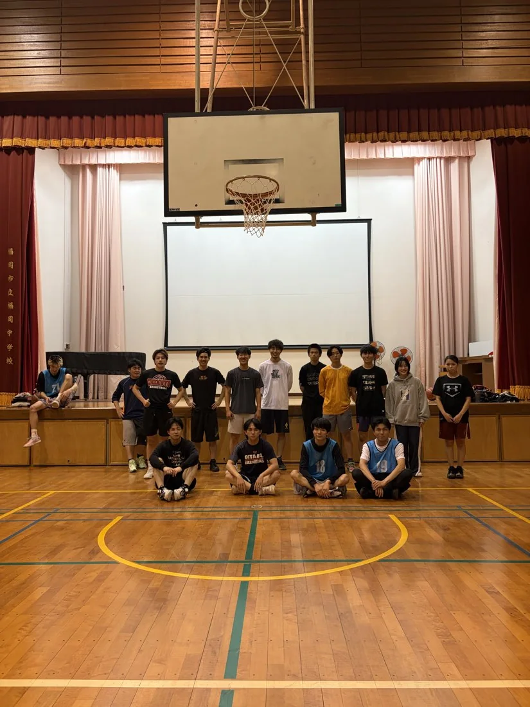
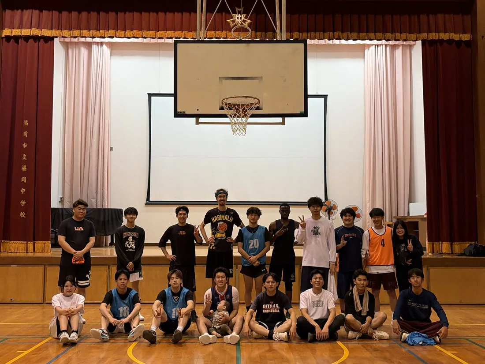
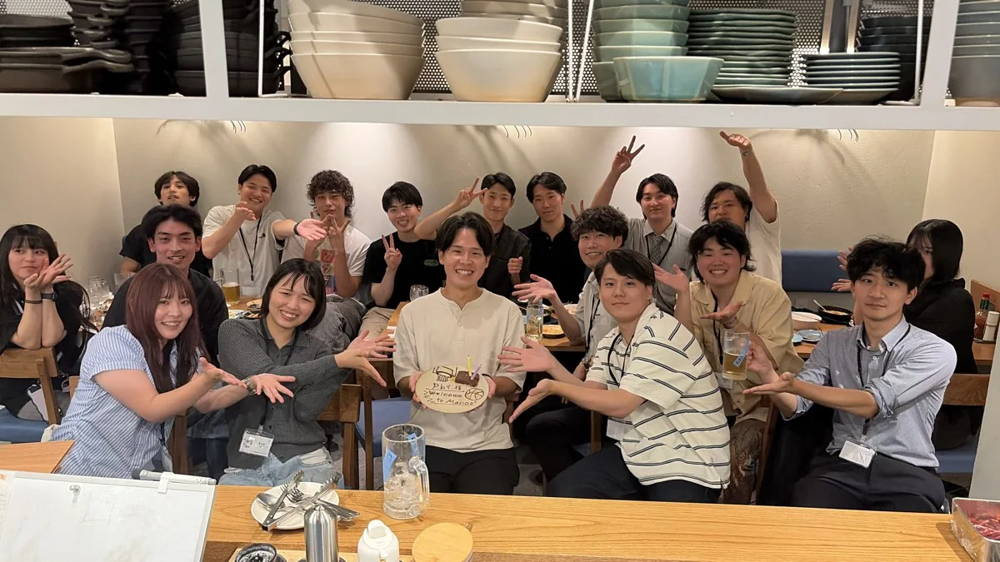
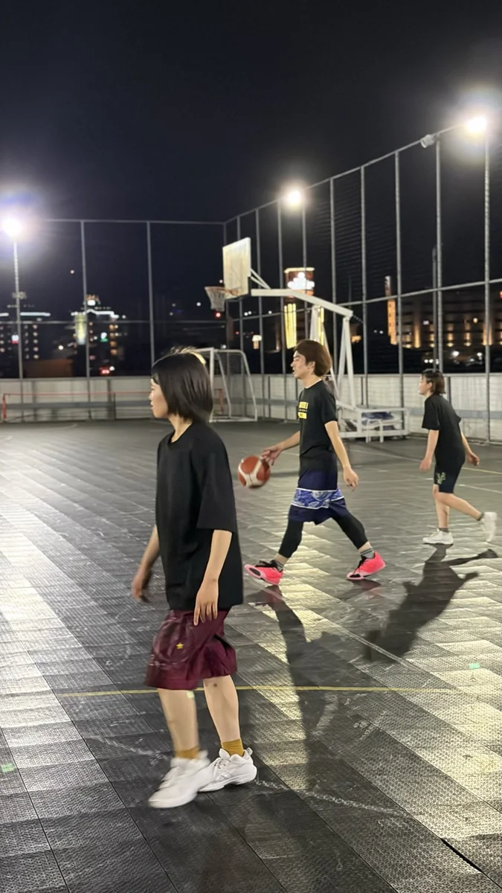
横にスワイプして写真を見る
参加条件・料金
参加の前に、ご確認ください。参加費 / 1回
都度払い・事前決済なし
20代社会人・バスケ経験者が対象です。参加までの流れ
日程確認から申込みまで、公式LINEで。久しぶりでも、一人でも。
まずは参加できる日を探してみてください。
下のボタンから、p.b.qの公式LINEを追加します。
最初のアンケートに回答し、参加できる日時・会場を確認します。
LINEから申込みを済ませたら、当日は体育館へ。
よくある質問
はい。学生時代に部活やサークルでの経験があれば、ブランクの年数は問いません。経験者を対象としているため、初心者の方は参加対象外です。
お一人でも、友達同士の参加も両方大歓迎です。初めての方や女性も参加しやすい雰囲気づくりを大切にしています。
事前決済はありません。参加費は1回500円の都度払いです。
福岡中学校や市営体育館など、福岡市内で活動しています。開催日時と会場は日程によって異なるため、公式LINEで最新の練習日程をご確認ください。
当日でもキャンセル料無料です。参加できなくなった場合は、キャンセルの手続きをお願いします。
また、バスケがある日々へ。
次の予定に、バスケをひとつ。
まずは練習日程を見てみませんか。